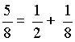
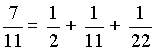
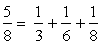
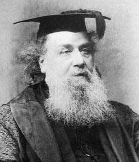

Les anciens Égyptiens ne connaissaient, comme rationnels, que les inverses d'entiers. Il s'agit de décomposer un rationnel de ]0 ; 1[ en une somme d'inverses d'entiers strictement croissants.
The ancient Egyptians knew, as rationals, only the inverses of integers. It is a matter of decomposing a rational of ]0; 1[ into a sum of inverses of strictly increasing integers.
Exemples
Examples


On peut démontrer qu'une telle décomposition est toujours possible. Cette décomposition n'est pas unique ! En effet on peut écrire également:
It can be shown that such a decomposition is always possible. This decomposition is not unique ! In fact, we can also write:

Dans son livre "Liber Abaci" paru en 1202, Léonard de Pise (Fibonacci) donne sans démonstration un algorithme qui permet d'obtenir une décomposition de toute fraction en une somme de fractions égyptiennes. La méthode a été redécouverte en 1880 par James Sylvester qui a démontré que l'algorithme donne bien une décomposition en un nombre fini de fractions.
In his book "Liber Abaci" published in 1202, Leonardo Pisano (Fibonacci) gives without demonstration an algorithm which makes it possible to obtain a decomposition of any fraction into a sum of Egyptian fractions. The method was then rediscovered in 1880 by James Sylvester who demonstrated that the algorithm actually gives a decomposition into a finite number of fractions.
Leonardo Pisano dit Fibonacci (1175/1250-IT)
James Sylvester (1814/1897-UK)

Méthode (algorithme dit 'glouton')
On veut décomposer la fraction a/b < 1 que l'on note a(0)/b(0), Pour k = 0, 1, ..soit n(k) le plus petit entier > n(k-1) tel que 1/n(k) soit inférieur ou égal à a(k)/b(k) On prendra à l'étape suivante a(k+1)/b(k+1) = a(k)/b(k) - 1/n(k) soit. a(k+1) = a(k)*n(k) - b(k) et b(k+1) = b(k) * n(k) L'algorithme débute en prenant k=0 et s'arrête lorsque a(k) est nul. a/b = 1/n(0) + 1/n(1) + ...
Preuve
(Simplifions la notation dans la preuve en omettant d'écrire la variable k) : On a 1/n <= a/b < 1/(n-1) et à l'étape suivante, s'il doit y en avoir une, a/b est remplacé par (an-b)/(bn). Le numérateur an-b est strictement inférieur au précédent 'a' car leur différence a - (an-b) = a-an+b est strictement positive, en effet l'inégalité stricte a/b < 1/(n-1) donne a(n-1)<b c'est-à-dire 0< b-an+a. Cet algorithme est loin d'être performant, ni du point de vue du nombre de fractions ni du point de vue de la taille des dénominateurs. Si nous l'utilisons pour la fraction 4/65 nous trouvons: 4/65=1/17+1/369+1/203873+1/831281966385 Alors qu'il est clair que: 4/65=1/26+1/65+1/130 Pour des compléments voir exercice sur la conjecture de Sierpinski.
Vous pouvez maintenant générer quelques exemples:
Method (so-called 'greedy' algorithm)
We want to decompose the fraction a/b < 1 that we note a(0)/b(0), For k = 0, 1, ..let n(k) be the smallest integer > n(k-1) such that 1/n(k) is less than or equal to a(k)/b(k) We will take in the next step a(k+1)/b(k+1) = a(k)/b(k) - 1/n(k) is. a(k+1) = a(k)*n(k) - b(k) and b(k+1) = b(k) * n(k) The algorithm starts by taking k=0 and stops when a(k) is zero. a/b = 1/n(0) + 1/n(1) + ...
Proof
(Let's simplify the notation in the proof by omitting to write the variable k): We have 1/n <= a/b < 1/(n-1) and in the next step, if there must be one, a/b is replaced by (an-b)/(bn). The numerator an-b is strictly less than the previous 'a' because their difference a - (an-b) = a-an+b is strictly positive, indeed the strict inequality a/b < 1/(n-1) gives a(n-1)<b i.e. 0< b-an+a. This algorithm is far from efficient, neither from the point of view of the number of fractions nor in terms of the size of the denominators. If we use it for the fraction 4/65 we find: 4/65=1/17+1/369+1/203873+1/831281966385 While it is clear that: 4/65=1/26+1/65+1/130 For additional information see exercise on the Sierpinski conjecture.